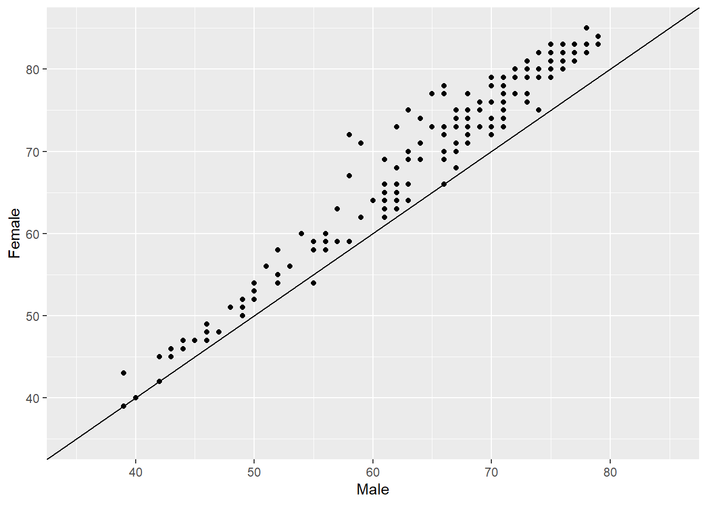
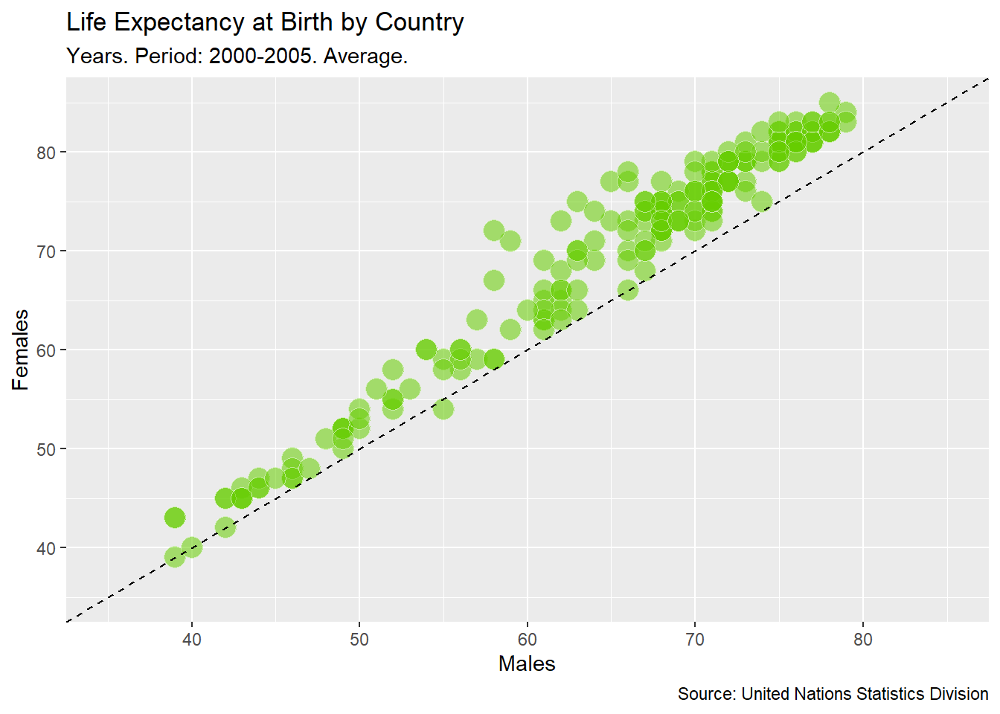
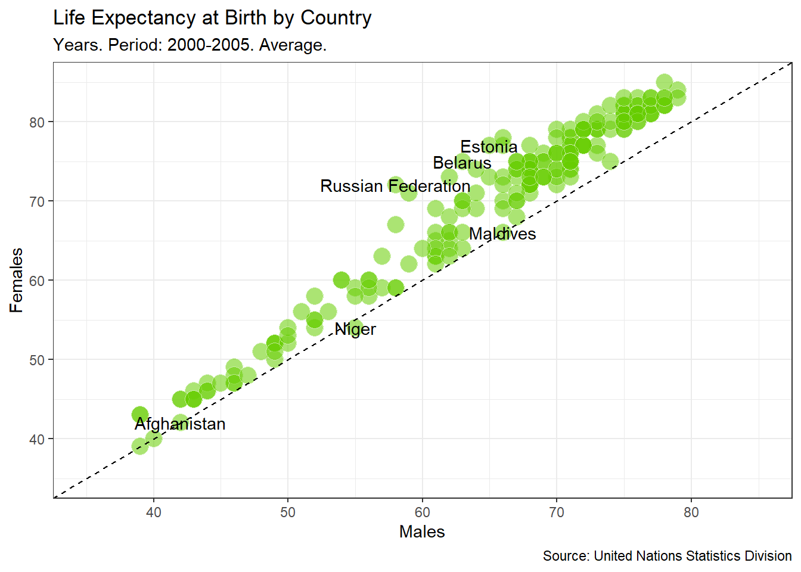
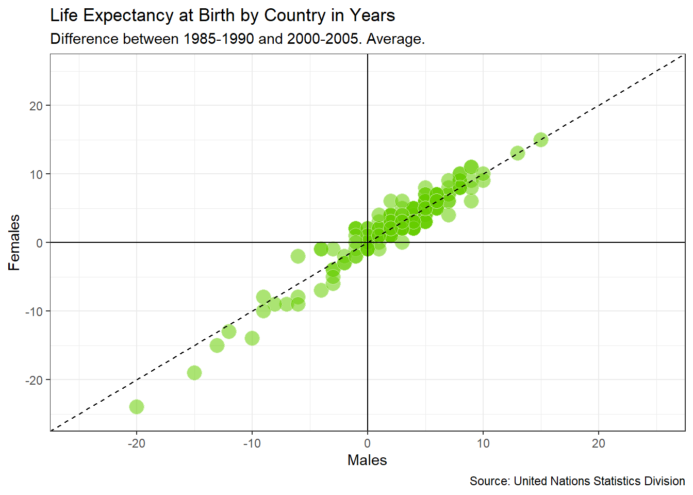

Libraries:
library(tidyverse)life_expec <- read_csv(here::here("data", "undata1.csv")) %>%
janitor::clean_names()##
## -- Column specification -------------------------------------------------
## cols(
## `Country or Area` = col_character(),
## Subgroup = col_character(),
## Year = col_character(),
## Source = col_character(),
## Unit = col_character(),
## Value = col_double(),
## `Value Footnotes` = col_double()
## )## Warning: 11 parsing failures.
## row col expected actual file
## 1561 -- 7 columns 2 columns 'E:/r/rtuts/ggplot2-projects-guided/data/undata1.csv'
## 1562 -- 7 columns 2 columns 'E:/r/rtuts/ggplot2-projects-guided/data/undata1.csv'
## 1563 -- 7 columns 2 columns 'E:/r/rtuts/ggplot2-projects-guided/data/undata1.csv'
## 1564 -- 7 columns 2 columns 'E:/r/rtuts/ggplot2-projects-guided/data/undata1.csv'
## 1565 -- 7 columns 2 columns 'E:/r/rtuts/ggplot2-projects-guided/data/undata1.csv'
## .... ... ......... ......... .....................................................
## See problems(...) for more details.(dt <- life_expec %>%
filter(year == "2000-2005") %>%
rename(country = country_or_area, gender = subgroup, life_expectancy = value) %>%
select(country, gender, life_expectancy) %>%
pivot_wider(names_from = gender, values_from = life_expectancy)
)## # A tibble: 195 x 3
## country Female Male
## <chr> <dbl> <dbl>
## 1 Afghanistan 42 42
## 2 Albania 79 73
## 3 Algeria 72 70
## 4 Angola 43 39
## 5 Argentina 78 71
## 6 Armenia 75 68
## 7 Aruba 76 70
## 8 Australia 83 78
## 9 Austria 82 76
## 10 Azerbaijan 70 63
## # ... with 185 more rowsdt %>%
ggplot(aes(x = Male, y = Female)) +
geom_point() +
xlim(35, 85) +
ylim(35, 85) +
geom_abline(slope = 1)
ggplot(dt, aes(x=Male, y=Female))+
geom_point(colour="white", fill="chartreuse3", shape=21, alpha=.55, size=5)+
geom_abline(intercept = 0, slope = 1, linetype=2)+
scale_x_continuous(limits=c(35,85))+
scale_y_continuous(limits=c(35,85))+
labs(title="Life Expectancy at Birth by Country",
subtitle="Years. Period: 2000-2005. Average.",
caption="Source: United Nations Statistics Division",
x="Males",
y="Females")
Finding where Male and Female life expectancy difference is the highest.
top_male <- dt %>% arrange(desc(Male - Female)) %>% head(3)
top_female <- dt %>% arrange(desc(Female - Male)) %>% head(3)ggplot(dt, aes(x=Male, y=Female))+
geom_point(colour="white", fill="chartreuse3", shape=21, alpha=.55, size=5)+
geom_abline(intercept = 0, slope = 1, linetype=2)+
scale_x_continuous(limits=c(35,85))+
scale_y_continuous(limits=c(35,85))+
geom_text(data = top_male, aes(label = country)) +
geom_text(data = top_female, aes(label = country)) +
labs(title="Life Expectancy at Birth by Country",
subtitle="Years. Period: 2000-2005. Average.",
caption="Source: United Nations Statistics Division",
x="Males",
y="Females") +
theme_bw()
life_expec %>%
filter(year %in% c("1985-1990", "2000-2005")) %>%
mutate(sub_year = paste(subgroup, year, sep = "_")) %>%
mutate(sub_year=gsub("-", "_", sub_year)) %>%
select(-subgroup, -year) %>%
pivot_wider(names_from = sub_year, values_from = value) %>%
mutate(
diff_female = Female_2000_2005 - Female_1985_1990,
diff_male = Male_2000_2005 - Male_1985_1990
) -> dt2ggplot(dt2, aes(x=diff_male, y=diff_female, label=country_or_area))+
geom_point(colour="white", fill="chartreuse3", shape=21, alpha=.55, size=5)+
geom_abline(intercept = 0, slope = 1, linetype=2)+
xlim(-25, 25) +
ylim(-25, 25) +
geom_hline(yintercept = 0) +
geom_vline(xintercept = 0) +
labs(title="Life Expectancy at Birth by Country in Years",
subtitle="Difference between 1985-1990 and 2000-2005. Average.",
caption="Source: United Nations Statistics Division",
x="Males",
y="Females")+
theme_bw()